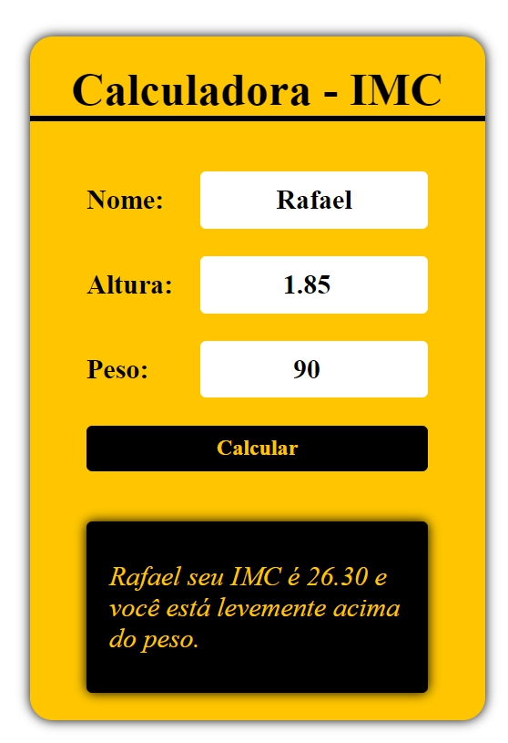
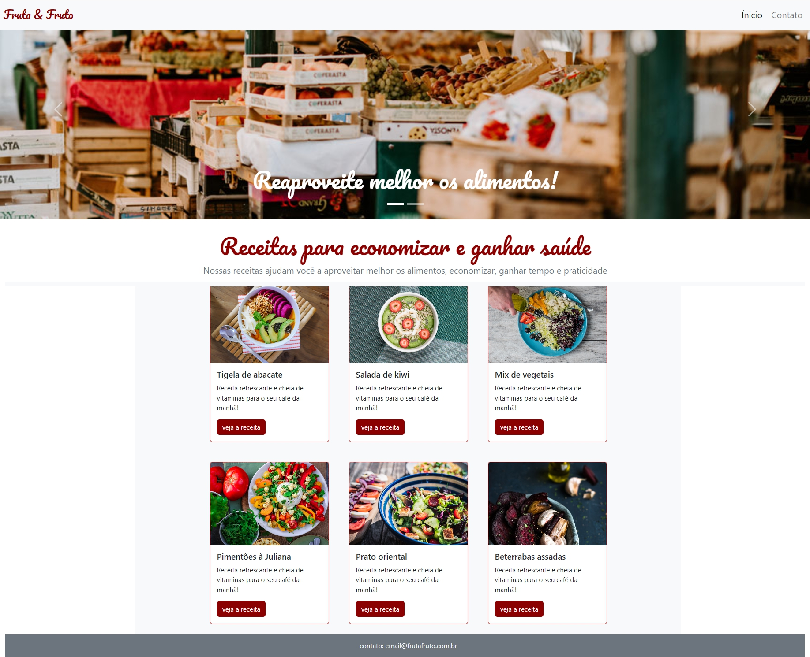

Projetos
-
Truco Online
Desenvolvi um contador de Truco para que não precisemos baixar um aplicativo, mas somente o utilizar através da web.

-
Loja e-commerce
Este foi um site feito para um projeto da faculdade, onde eu e meus amigos estavamos começando a aprender a programar.

-
Calculadora IMC
Fiz uma calculadora que colocando o seu peso e sua altura, conseguimos determinar o seu índece de massa corporal.
 -
Gerador de Senhas
Fiz um gerador de senhas, onde podemos gerar uma senha aleatória e usa-lá no dia a dia.

-
Fruta & Fruto
Este foi um site desenvolvido juntamente com a Alura, onde estavamos aprendendo a utilizar o Bootstrap.
 -
Alura Mid
Este foi um site desenvolvido juntamente com a Alura, onde estavamos parendendo a utilizar o Javascript.